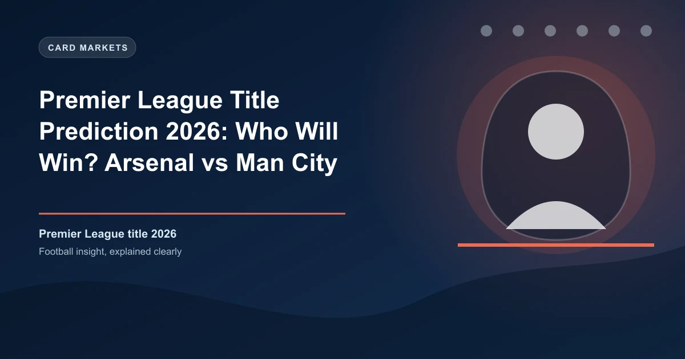

Premier League Title Prediction 2026: Who Will Win?

The 2025-26 Premier League title race has reached its defining moment. With just three games remaining, Arsenal sit five points clear at the summit with a +41 goal difference — but Manchester City have a game in hand and the experience of five title triumphs in the last six seasons. Who will lift the trophy on May 24?
1. Arsenal — 76 pts, +41 GD (35 games, 3 remaining)
2. Manchester City — 71 pts, +37 GD (34 games, 4 remaining)
3. Manchester United — 64 pts (out of race)
4. Liverpool — 58 pts (out of race)
The Stakes: A Two-Horse Race Entering the Final Furlong
Manchester City's dramatic 3-3 draw at Everton on May 4 blew the title race wide open. Despite twice taking the lead through Jeremy Doku and Erling Haaland, David Moyes' Everton fought back twice, with Thierno Barry's brace and a Jake O'Brien strike earning a deserved point for the Toffees.
That slip cost City dearly. Arsenal, who beat Newcastle 1-0 thanks to an Eberechi Eze goal, now hold a five-point cushion with only three fixtures left. More importantly, the Gunners now control their own destiny — win all three remaining matches, and the title returns to the Emirates for the first time since the Invincibles season of 2003-04.
Remaining Fixtures: Advantage Arsenal
Arsenal's Run-In
| Date | Opponent | Venue | Note |
|---|---|---|---|
| May 10 | West Ham United | Away | Bottom half |
| May 18 | Burnley | Home | Relegated |
| May 24 | Crystal Palace | Away | Bottom half |
Manchester City's Run-In
| Date | Opponent | Venue | Note |
|---|---|---|---|
| May 9 | Brentford | Home | Chasing Europe |
| May 13 | Crystal Palace | Away | Bottom half |
| May 19 | Bournemouth | Away | Chasing Europe |
| May 24 | Aston Villa | Home | Chasing Europe |
The fixture list heavily favors Arsenal. All three of their remaining opponents sit in the bottom half of the table. In the reverse fixtures this season, Arsenal beat these three sides by an aggregate score of 8-1. Mikel Arteta's men also have the luxury of focusing exclusively on the league, having been eliminated from European competition.
City, meanwhile, face a tougher road. Three of their four remaining opponents — Brentford, Bournemouth, and Aston Villa — are still chasing European qualification. Villa, in particular, have been a bogey team for City, losing just once to them in recent encounters. The May 24 showdown at the Etihad could be the decisive day if City narrow the gap.
The Opta Supercomputer Verdict
Opta's supercomputer, which simulates the remainder of the season thousands of times using power rankings and betting market odds, gives Arsenal a commanding 79.7% to 86.53% chance of winning the title, depending on the latest update.
The model accounts for:
- Arsenal's five-point lead and superior goal difference (+41 vs +37)
- City's tougher fixture list (three games against top-half sides)
- Historical performance under pressure for both squads
- Home/away splits for remaining matches
Expert Predictions: A Divided Verdict
Team Arsenal
Adrian Clarke (Premier League writer): "After knocking on the door for three seasons in a row, Arsenal will be fired up to make sure this is their time. The squad investment has been strong, and the arrival of Viktor Gyokeres could be a game changer."
Wayne Rooney: "I think Arsenal will win it. The fixtures are more favourable. I think they will win every game and Man City will slip up."
Verdict: Arsenal to finish 85 points, champions by 5+ points.
Team Manchester City
Alex Keble: "Pep Guardiola has dramatically shaken things up this summer with new signings that make City faster and sharper. Coupled with Rodri's return, City will blow the cobwebs away."
Joe Hart: "I look at Man City and their spine is so long — Donnarumma, Rodri, Bernardo Silva, Haaland. That is the spine I want to be part of. I think they will do whatever needs to be done."
Verdict: City to edge it on goal difference after a final day shootout.
Key Factors That Will Decide the Title
1. Goal Difference Could Be Decisive
The Premier League tiebreaker order is: (1) Goal difference, (2) Goals scored, (3) Head-to-head points, (4) Away goals in head-to-head. Currently, Arsenal lead by +41 to City's +37 — a four-goal cushion.
If City win their game in hand and both teams win all remaining matches:
- Arsenal: 76 + 9 = 85 points (estimated +50 GD)
- City: 71 + 12 = 83 points (estimated +49 GD)
Arsenal win the title comfortably in this scenario. However, if City win all four and Arsenal drop points (e.g., two wins, one draw = 82 points), City could overtake them.
2. Champions League Distraction for Arsenal
Arsenal face Atletico Madrid in the Champions League semi-final second leg on May 6 — the same day they travel to West Ham. Managing squad rotation between the two competitions could test Arteta's squad depth. City, having been eliminated from Europe, can focus 100% on the league run-in.
3. Experience vs Momentum
City have the proven pedigree: Pep Guardiola has never gone more than one season without winning the league during his decade in Manchester. Players like Rodri, Bernardo Silva, and Erling Haaland have been there before.
Arsenal, conversely, are chasing their first title in 22 years. The pressure of leading with a small margin has seen them stumble before — they've won just one of their last six games in all competitions. However, their favorable fixture list reduces the margin for error significantly.
4. The Erling Haaland Factor
Haaland has scored 24 goals in 34 league games this season but has netted just once in his last nine matches across all competitions. If the Norwegian hits form in City's final four games, he could be the difference-maker. Arsenal's Viktor Gyokeres, meanwhile, has 12 Premier League goals since joining — a solid return but not yet at Haaland's level.
Betting Odds & Market Analysis
| Market | Odds | Implied Probability |
|---|---|---|
| Arsenal to Win Title | ~1.25 to 1.33 | ~75-80% |
| Manchester City to Win Title | ~3.00 to 4.00 | ~25-33% |
| Arsenal to Win All 3 Remaining | ~2.50 | ~40% |
| City to Win All 4 Remaining | ~5.00 | ~20% |
Our Prediction
WinFulltime Expert Verdict
Winner: Arsenal
Final Points Prediction:
Arsenal: 85 points (3 wins)
Manchester City: 83 points (4 wins)
Key Reasoning:
- Arsenal's remaining fixtures are significantly easier (all bottom-half opponents)
- Five-point cushion requires City to win all four remaining games while hoping Arsenal drop points
- City's away games at Bournemouth and Everton (already played) have proven difficult — they drew at Everton and could slip again
- Arsenal have won all three reverse fixtures against their remaining opponents by an 8-1 aggregate score
- History favors the team leading at this stage — teams with a 5+ point lead with 3 games left win the title over 80% of the time
Betting Tips for the Title Race
1. Arsenal to Win the Premier League @ ~1.25
Low odds, but the highest-confidence play. Arsenal control their destiny with three winnable fixtures. The five-point cushion and superior goal difference make this the smart value play despite the short price.
2. Arsenal to Win All 3 Remaining Games @ ~2.50
Arsenal beat West Ham (2-0), Burnley (3-1), and Crystal Palace (1-0) in the reverse fixtures. With the title on the line and easier opponents, a perfect finish is plausible.
3. Manchester City Under 83.5 Points @ ~1.85
City need 13 points from 12 possible to reach 84 points. With tough away games at Bournemouth and a final-day clash against Villa, dropping at least one point is highly probable.
4. Arsenal Top at Christmas 2026/27 @ ~2.00
If Arsenal finally break their title drought, they'll enter next season as defending champions with momentum. Back them to start next season strongly.
The Final Word
The 2025-26 Premier League title race has all the ingredients of a classic: a young, hungry Arsenal side chasing history, and a City juggernaut with championship DNA refusing to fade. But fixtures often decide titles, and Arsenal's run-in — three games against relegated or bottom-half sides — is as forgiving as it gets.
If Mikel Arteta's men show the composure that has eluded them in previous title races, the Gunners will end their 22-year wait and lift the Premier League trophy on May 24. City have the quality to pounce on any slip, but with the mathematics and fixture list aligned against them, the smart money is firmly on Arsenal.